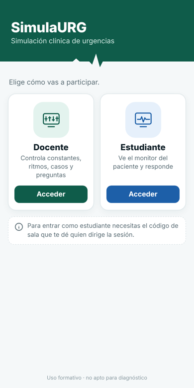
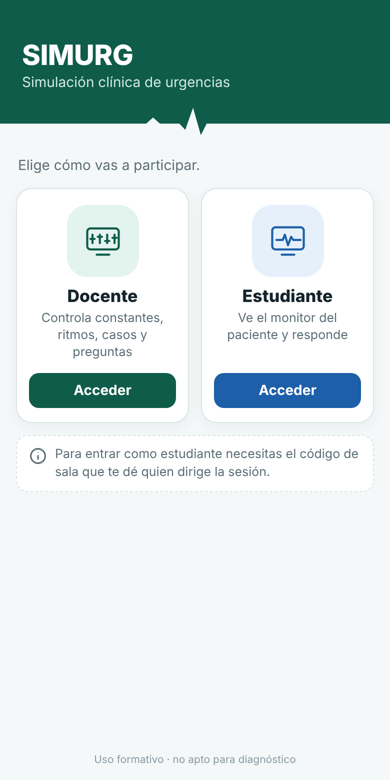
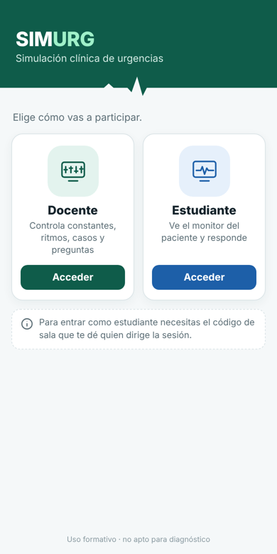
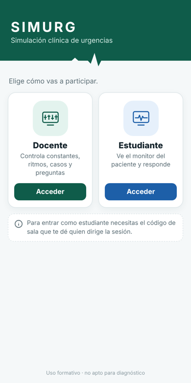
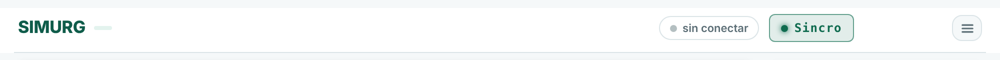
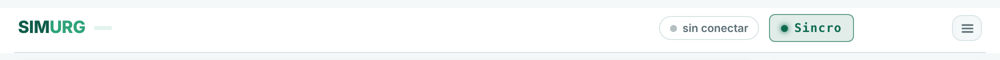
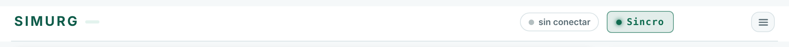

Pantalla de entrada real de la app (capturas), con el nombre cambiado en tres estilos. Solo cambia el nombre: colores, tarjetas y textos son los de ahora.

Ahora«SimulaURG»

A · Igual que ahoraMisma letra y peso; solo cambia el nombre.

B · Dos tonos«SIM» blanco y «URG» verde claro: se leen las dos partes (simulación + urgencias).

C · EspaciadaLetras separadas, estilo rótulo de monitor.
Cabecera de las consolas (docente y estudiante)

A

B(«URG» en el verde del tema)

C
Qué cambiaría al aplicarlo
Pantalla de entrada y cabecera de las consolas: «SimulaURG» pasa a ser «SIMURG», con el estilo elegido.
Nombre en la pestaña del navegador y en el icono instalado (web en iPhone/Android y la APK): ahora pone «Simulador de Urgencias» o «Simulador Urgencias»; pasaría a «SIMURG». En la web instalada, el nombre del icono se actualiza al volver a instalarla.
Manual, novedades y README: las menciones al nombre.
APK: nombre de la app en Android y título de las Releases («SIMURG 2026.11.…»); el archivo pasaría a SIMURG-….apk. Se instala encima de la actual (misma firma e identificador).
Lo que no cambia: la dirección web (…/simula-urg/), el repositorio, las salas e invitaciones, los ajustes guardados y el icono (sus tres propuestas siguen pendientes).